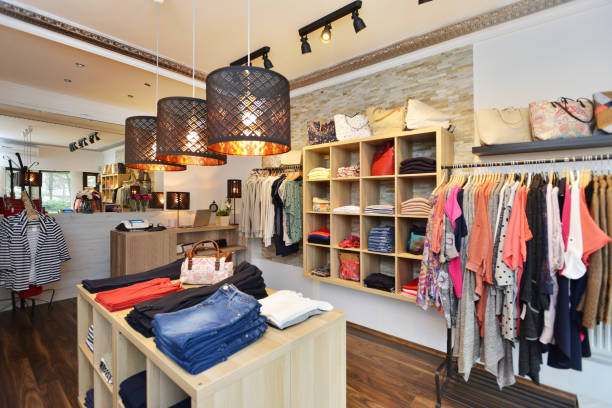
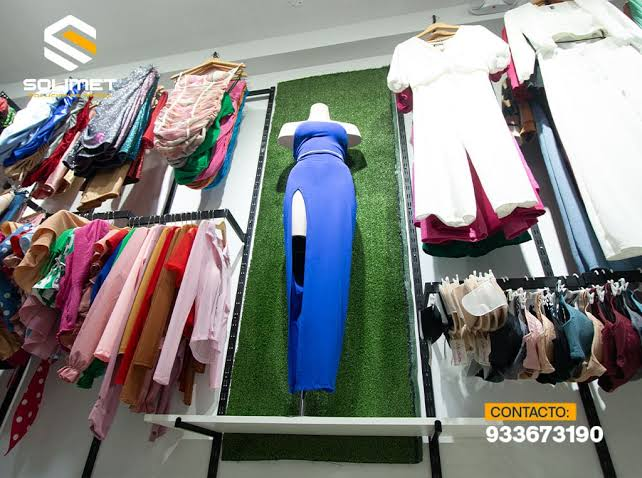
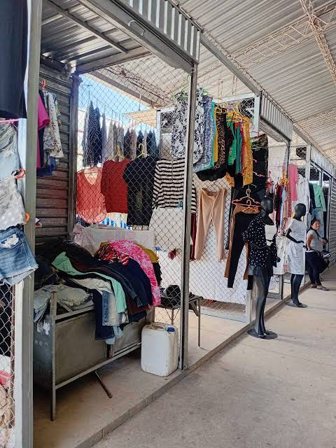

La idea nació cuando una persona se dio cuenta de que muchos jóvenes buscaban ropa moderna y económica. Decidió comprar algunas prendas y accesorios al por mayor para revenderlos a un precio accesible. Al principio, ofrecía sus productos a sus conocidos y después comenzó a publicarlos en redes sociales para llegar a más compradores.
Se utilizó un sistema comercial de compra y venta, porque el emprendimiento compra productos a proveedores y luego los vende a sus clientes. Además, utiliza un sistema de ventas digital mediante redes sociales y WhatsApp para recibir pedidos y coordinar las entregas.